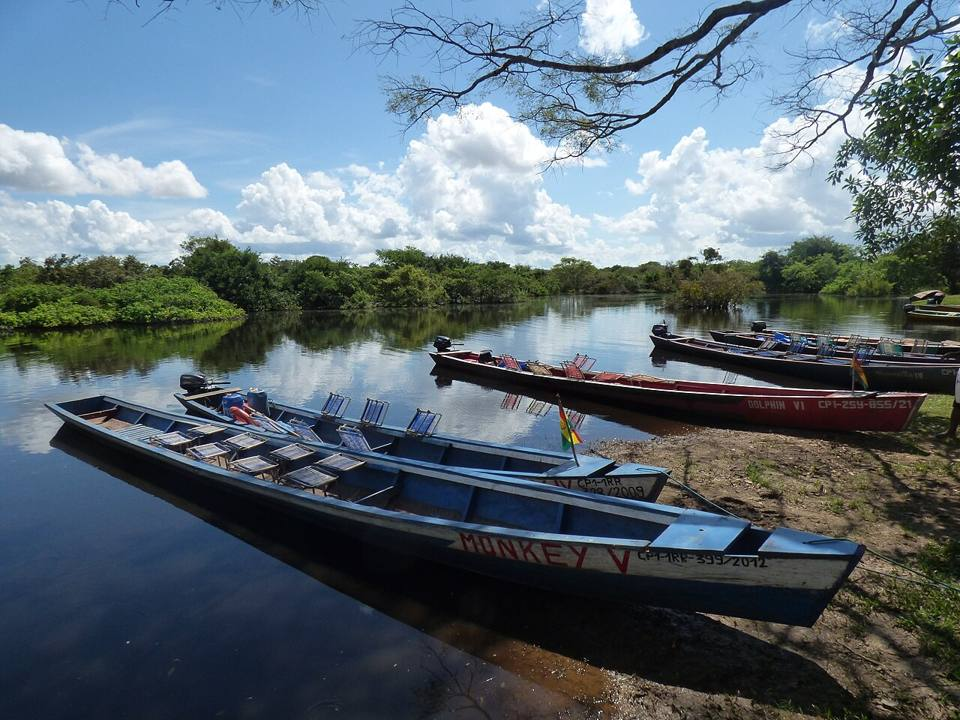
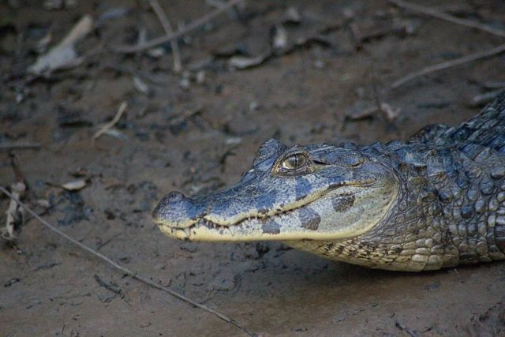
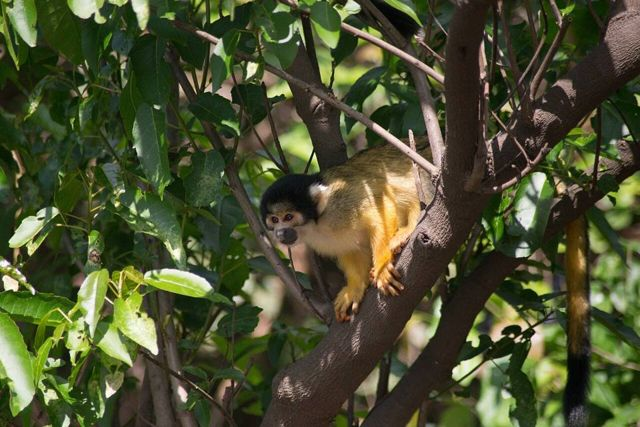
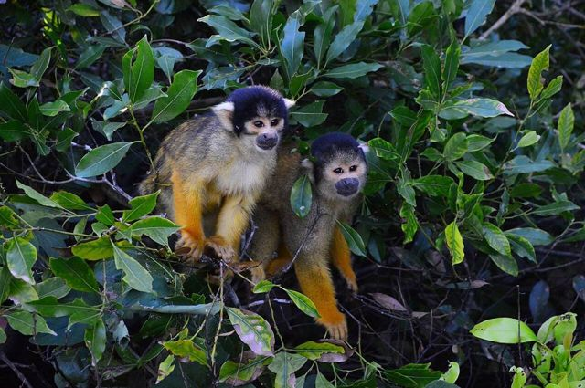
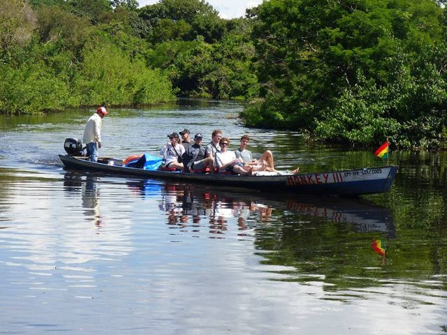
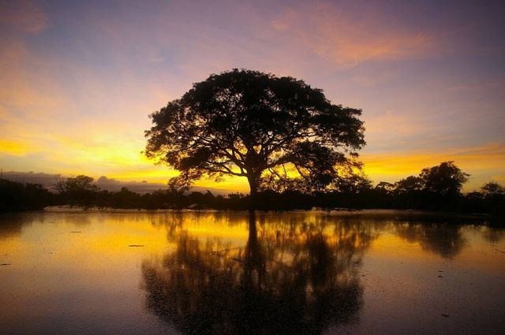
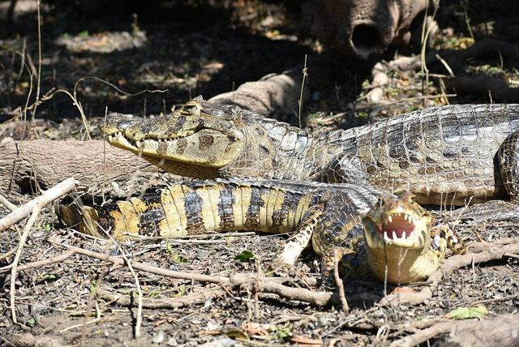

Pampas del Yacuma
Departamento de Beni · Selva y trópico

Las pampas del Yacuma son humedales donde se ven muchísimos animales en poco tiempo: caimanes, capibaras, monos, cientos de aves y delfines rosados de río. Menos salvaje que la selva, pero mucho más fácil para ver fauna.
200 maltura
2 a 3 díaspara quedarse
Qué hacer
- Paseo en bote por el río Yacuma
- Ver los delfines rosados (algunos tours ofrecen nadar cerca, sin tocarlos)
- Atardecer en la pampa
Qué comer
- Pescado del BeniPescados de río grande (surubí, pacú) asados a la leña, con yuca.
- MasacoPlátano o yuca machacados con charque o queso. Contundente y nutritivo.
Consejo. Tour de 3 días desde Rurrenabaque. Elige una agencia que respete a los animales: no se alimenta ni se toca la fauna.
Cómo llegar a Pampas
Rurrenabaque Tour en 4x4 o excursión · 3 h en 4x4 + bote
Incluido en el tour de pampas.
Fotos de Pampas del Yacuma









.jpg){kind=link}


Otros lugares de la región
 RurrenabaquePuerta de entrada a la Amazonía boliviana, a orillas del río Beni.
RurrenabaquePuerta de entrada a la Amazonía boliviana, a orillas del río Beni. Parque Nacional MadidiUno de los lugares con más biodiversidad del planeta. Bosque primario.
Parque Nacional MadidiUno de los lugares con más biodiversidad del planeta. Bosque primario. Reserva Barba AzulSabanas del Beni, refugio de la paraba barba azul, uno de los loros más raros del mundo.
Reserva Barba AzulSabanas del Beni, refugio de la paraba barba azul, uno de los loros más raros del mundo. Reserva de la Biosfera del BeniSabanas, bosques y lagunas cerca de San Borja: una reserva muy rica en fauna, todavía poco visitada.
Reserva de la Biosfera del BeniSabanas, bosques y lagunas cerca de San Borja: una reserva muy rica en fauna, todavía poco visitada. Trinidad (Llanos de Moxos)Capital del Beni, llanuras inundables y cultura moxeña.
Trinidad (Llanos de Moxos)Capital del Beni, llanuras inundables y cultura moxeña. Laguna SuárezUna gran laguna tranquila a las puertas de Trinidad, para bañarse y comer pescado.
Laguna SuárezUna gran laguna tranquila a las puertas de Trinidad, para bañarse y comer pescado. San Ignacio de MoxosAntigua misión jesuítica de las llanuras del Beni, famosa por la Ichapekene Piesta (UNESCO).
San Ignacio de MoxosAntigua misión jesuítica de las llanuras del Beni, famosa por la Ichapekene Piesta (UNESCO). CobijaLa capital de Pando, a orillas del río Acre, frente a Brasil: puerta de la Amazonía del norte.
CobijaLa capital de Pando, a orillas del río Acre, frente a Brasil: puerta de la Amazonía del norte. Porvenir y el río TahuamanuPueblo amazónico cerca de Cobija: paseos en bote por el Tahuamanu y piscina natural.
Porvenir y el río TahuamanuPueblo amazónico cerca de Cobija: paseos en bote por el Tahuamanu y piscina natural. Puerto Rico y la reserva ManuripiPueblo en la confluencia de dos ríos, puerta de la reserva amazónica Manuripi.
Puerto Rico y la reserva ManuripiPueblo en la confluencia de dos ríos, puerta de la reserva amazónica Manuripi. RiberaltaPuerto amazónico en la confluencia del Beni y el Madre de Dios, capital de la castaña.
RiberaltaPuerto amazónico en la confluencia del Beni y el Madre de Dios, capital de la castaña. GuayaramerínCiudad fronteriza a orillas del río Mamoré, frente a la ciudad brasileña de Guajará-Mirim.
GuayaramerínCiudad fronteriza a orillas del río Mamoré, frente a la ciudad brasileña de Guajará-Mirim.